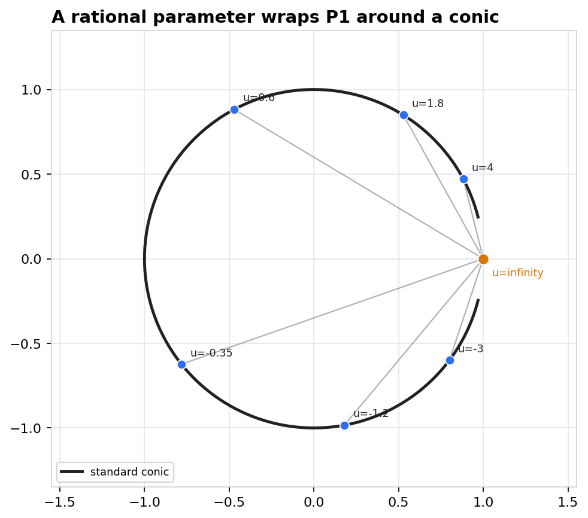
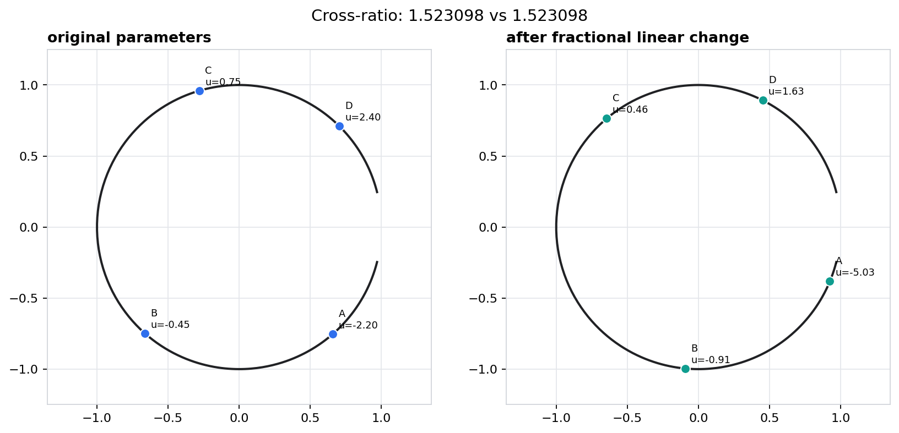
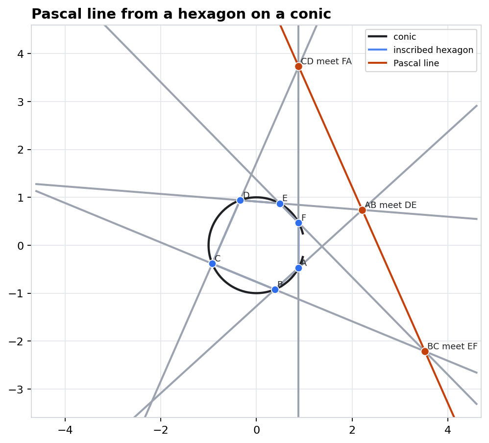
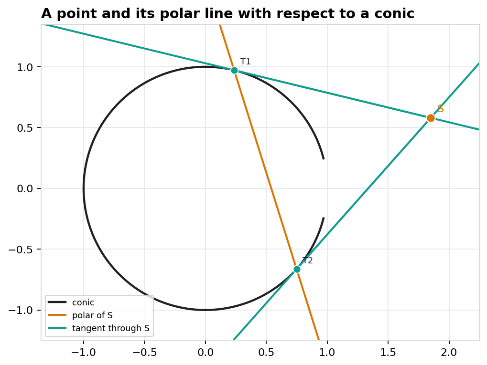
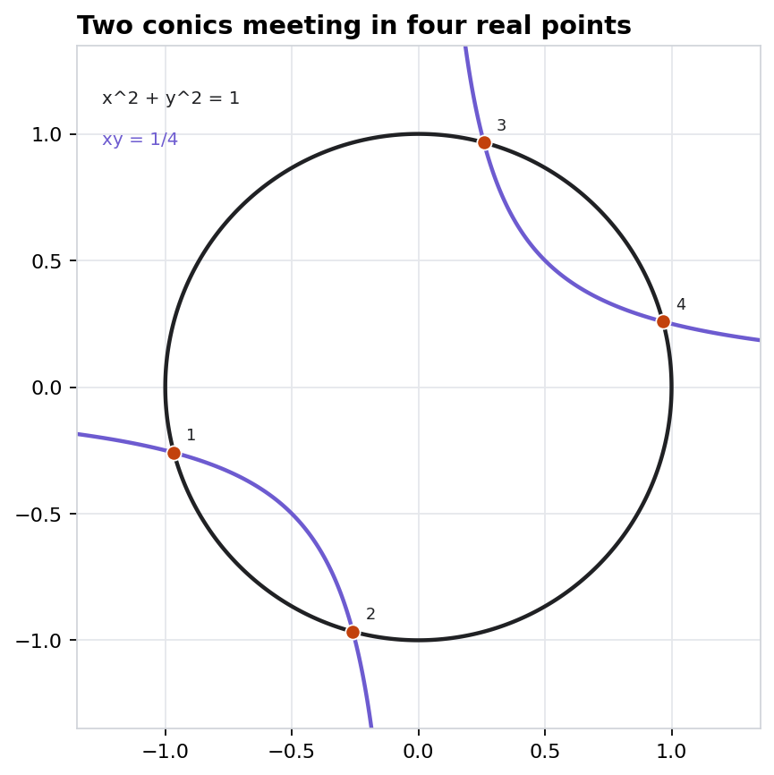

Geometry II · Chapter 16 · Source span: PDF pages 179-226.
Projective Conics
A nonsingular conic is a quadratic equation and a disguised projective line. The lecture turns incidence, tangency, cross-ratio, Pascal, Bezout, and pencils into checkable homogeneous algebra.
Model
\(X^T Q X = 0\)
Parameter
\(P^1 \to C\)
Invariant
Cross-ratio
Checks
Residuals below \(10^{-12}\)
Notebook: D:/Geometry/Geometry-II/chapter-16-projective-conics/16-projective-conics.ipynbGeometry Atlas
Translation guide
The Chapter in Linear Algebra Coordinates
Projective primitives
| Geometry | Computation |
|---|---|
| Point | \(X=[x:y:z]\), nonzero up to scale |
| Line | \(l=[a:b:c]\), incidence \(l^T X=0\) |
| Join | Line through points: \(P \times Q\) |
| Meet | Point where lines meet: \(l \times m\) |
| Conic | Symmetric matrix \(Q\), equation \(X^T Q X=0\) |
Projective coordinate change: \(X \mapsto H X\), while \(Q \mapsto H^{-T} Q H^{-1}\).
Lecture route
- Parametrize the standard conic by a projective line.
- Read cross-ratio from the parameter, not from Euclidean distance.
- Compute Pascal by joins, meets, and one collinearity determinant.
- Use \(Q\) for tangents and polars.
- Count intersections projectively, then draw an affine chart.
- Watch a pencil become singular through \(\det(Q_0+\lambda Q_1)\).
Homogeneous coordinates are not extra bookkeeping; they are the mechanism that keeps infinity, tangency, and degeneracy inside the same calculation.
Projective objects before affine picturesChapter 16
Conics as parametrized projective lines
The Standard Conic Carries a \(P^1\) Coordinate

Parametrization
For finite \(u\), set
\(P(u)=[u^2-1:2u:u^2+1]\).
Then \(P(u)^T\operatorname{diag}(1,1,-1)P(u)=0\), and \(P(\infty)=[1:0:1]\).
Geometric origin
A line through one fixed base point meets a conic in one more point. Vary the slope of that line, and the second intersection sweeps the conic with one projective parameter.
Notebook residual
2.22e-16
Moral
C ~= P^1
Dehomogenize only to draw the chartParametrization
Cross-ratio on a conic
Four Conic Points Inherit a Line Invariant

Invariant on \(P^1\)
\([u_1,u_2;u_3,u_4]=\frac{(u_3-u_1)(u_4-u_2)}{(u_3-u_2)(u_4-u_1)}\)
A fractional linear change \(u \mapsto (au+b)/(cu+d)\) preserves this number when \(ad-bc\neq 0\).
| Parameters | Cross-ratio | Role |
|---|---|---|
| \(-2.2,-0.45,0.75,2.4\) | 1.5230978261 | Original sample |
| \(-5.032,-0.912,0.464,1.628\) | 1.5230978261 | After Mobius map |
The displayed conic points move, but the \(P^1\) cross-ratio changes by only \(4.44\mathrm{e}{-16}\) in the notebook check.
Projective invariants live on the parameter lineCross-ratio
Projectivities preserving a conic
Plane Motion Becomes Fractional Linear Parameter Motion
Structural statement
After choosing a parametrization \(P^1 \to C\), projectivities of the plane that preserve a nonsingular conic act on its parameter by \(PGL(2)\).
Three-point calibration
A fractional linear map is determined by the images of three distinct parameter values. The same three marked conic points determine the corresponding motion on the conic.
The conic matrix follows the ambient coordinates:
\(Q' = H^{-T} Q H^{-1}\).
Conic geometry behaves like projective line geometryAutomorphisms
Pascal as collinearity computation
Six Points on a Conic Force One Line

Pascal theorem
Let \(A,B,C,D,E,F\) be six points on a nonsingular conic. Define the three opposite-side intersections
\(U=AB \cap DE,\quad V=BC \cap EF,\quad W=CD \cap FA.\)
Then \(U,V,W\) are collinear.
Notebook construction
- Pick six uneven \(P^1\) parameters.
- Build each side line as a point cross product.
- Build \(U,V,W\) as line cross products.
- Evaluate one normalized incidence residual.
Pascal collinearity residual
1.54e-16
No metric notion appears in the theoremPascal
Why homogeneous algebra is the right language
Pascal Reduces to Join, Meet, and One Determinant
Projective reason
Joins, meets, and determinants are homogeneous operations. If a projectivity moves the whole configuration, the statement \(U,V,W\) are collinear moves with it.
Avoid a hidden affine assumption
Some choices send one of \(U,V,W\) to infinity. Homogeneous coordinates still compute it as a vector, and the same determinant still tests collinearity.
Quick classroom check
Given six parameter values, compute \(P(u_i)\), form \(U,V,W\), and test \(\det[U\ V\ W]\). The theorem predicts zero before any affine chart is selected.
Projective incidence survives coordinate motionPascal computation
Tangents, polars, and the dual use of Q
The Conic Matrix Converts Points into Lines

Point-line duality from Q
For a conic \(C: X^T Q X=0\), define the line associated to a point \(S\) by
\(l_S = Q S.\)
If \(S\in C\), this is the tangent at \(S\). If \(S\notin C\), this is the polar line of \(S\).
Incidence symmetry: \((Q T)^T S = T^T Q S = T^T(QS)\).
Tangent incidence error
0.00e+00
Dual habit
point -> line
The same matrix evaluates and polarizesPolarity
Intersections and the visible part of Bezout
Four Intersections Are Stable Before We Choose a Real Chart

Bezout for two conics
Over the complex projective plane, two conics with no common component meet in four points counted with multiplicity.
Visible example
Use \(x^2+y^2=1\) and \(xy=1/4\). With \(s=x+y\) and \(t=x-y\), the equations become
\(s^2=1+2a,\quad t^2=1-2a,\quad a=1/4.\)
Circle residual
2.22e-16
Hyperbola residual
1.11e-16
Affine visibility is not the same as projective countBezout
Pencils and singular members
A Pencil Is a Projective Line of Quadratic Forms
Linear family
A conic pencil has matrices
\(Q_\lambda = Q_0 + \lambda Q_1.\)
All members pass through the same base scheme, while singular members appear when \(\det(Q_\lambda)=0\).
Notebook determinant roots
\(\lambda=-4\)
\(\lambda=-2\)
\(\lambda=2\)
Interactive artifact: conic_pencil_slider.html
Determinant zero turns geometry into a diagnosticPencils
Applied lab: fit, move, and test a conic
Five Points Determine One Projective Conic in General Position
Why five?
A symmetric \(3\times 3\) conic matrix has six entries up to scale. Each point condition \(X_i^T Q X_i=0\) is linear in those entries.
| Lab check | Value |
|---|---|
| Five-point fit error | 4.68e-16 |
| Max transformed residual | 2.22e-16 |
| Recovered object | Conic matrix up to scale |
The fit is useful only because the projective move and residual checks travel with the same homogeneous object.
Fit incidence first, draw coordinates secondApplied lab
Common failure modes
What Goes Wrong When the Affine Picture Takes Over
Dehomogenizing too early
If \(z=0\), an affine chart misses the point. Joins, meets, and conic equations should be checked before dividing by any coordinate.
Safer habit
Compute in homogeneous vectors, normalize only for display, and record residuals in the projective model.
Trusting real visibility
A real affine drawing may show fewer than four conic intersections. Bezout counts in the complex projective plane with multiplicity.
Safer habit
Separate the theorem from the chart: first ask for the projective count, then classify what the chosen chart makes visible.
Treating singularity as noise
In a pencil, determinant zero is a feature. It marks rank drop, degenerate conics, and often the most informative members of the family.
Discussion prompt
For a given \(Q_0+\lambda Q_1\), predict what changes in the drawing as \(\lambda\) crosses a determinant root.
Most mistakes are chart mistakesProjective habits
Lecture recap
Projective Conics as Checkable Certificates
Objects
- Points and lines are homogeneous vectors.
- Conics are symmetric matrices up to scale.
- A nonsingular conic carries a \(P^1\) parameter.
- A pencil is a line of conic matrices.
Invariants
- Cross-ratio survives fractional linear reparameterization.
- Pascal collinearity survives projective motion.
- Polarity is encoded by the same \(Q\) as the conic.
- Bezout count survives beyond the real affine chart.
Notebook Checks
- Parametrization residual: \(2.22\mathrm{e}{-16}\).
- Cross-ratio error: \(4.44\mathrm{e}{-16}\).
- Pascal residual: \(1.54\mathrm{e}{-16}\).
- Fit and projective move errors below \(5\mathrm{e}{-16}\).
Keep the homogeneous object as long as possible. The affine drawing is a view, not the theorem.
Geometry II · Chapter 16Projective Conics